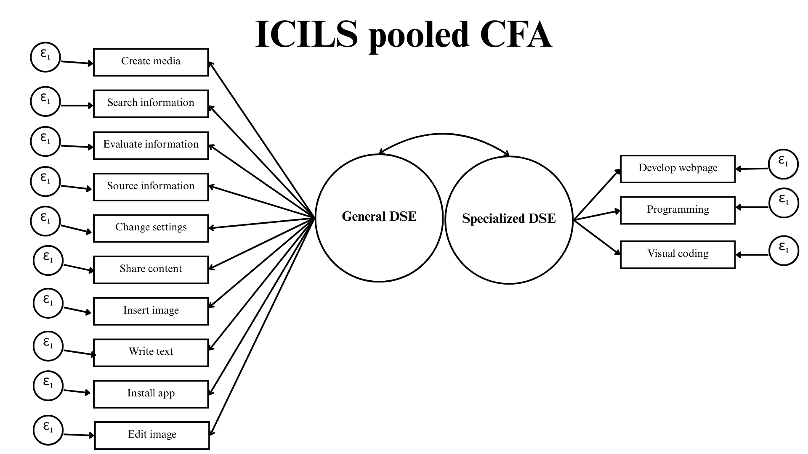
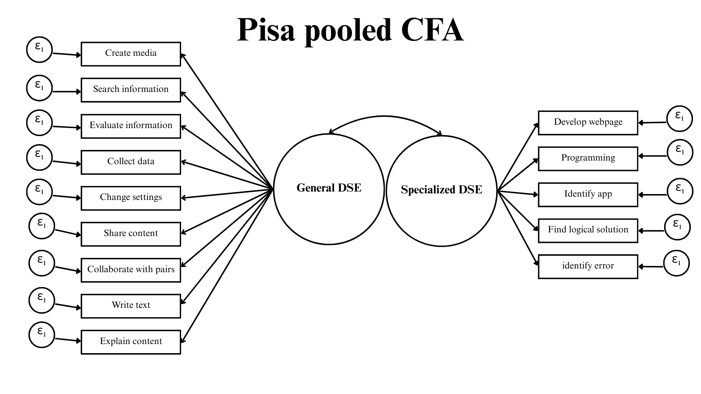

| ICILS.Code | ICILS.Label | PISA.Code | PISA.Label | Comparative.code | Type.of.DSE |
|---|---|---|---|---|---|
| IS3G24C | Search for relevant information for a school project on the internet | IC183Q01JA | Search for and find relevant information online | search_info | General |
| IS3G24M | Find the original sources of information referred to in an article on the internet | source_info | General | ||
| IS3G24J | Judge whether you can trust information you find on the internet | IC183Q02JA | Assess the quality of information you found online | evaluate_info | General |
| IC183Q08JA | Collect and record data (e.g., using data loggers, Google Forms, spreadsheets) | collect_data | General | ||
| IS3G24I | Install a program or app | install_app | General | ||
| IC183Q03JA | Explain to other students how to share digital content online or on a school platform | explain_content | General | ||
| IS3G24G | Upload text, images, or video to an online profile | IC183Q05JA | Share practical information with a group of students | share_content | General |
| IC183Q04JA | Collaborate with other students on a group assignment | pair_collab | General | ||
| IS3G24B | Write or edit text for a school assignment | IC183Q07JA | Write or edit text for a school assignment | write_text | General |
| IS3G24D | Build or edit a webpage | IC183Q10JA | Create, update and maintain a webpage or a blog | develop_webpage | Specialized |
| IS3G24F | Create a multi-media presentation (with sound, pictures, or video) | IC183Q09JA | Create a multi-media presentation (with sound, pictures, or video) | create_media | Generalized |
| IS3G24H | Insert an image into a document or message | insert_image | Generalized | ||
| IS3G24A | Edit digital photographs or other graphic images | edit_image | Generalized | ||
| IS3G24K | Use a text-based programming language (e.g., Python, JavaScript...) | IC183Q14JA | Create a computer program (e.g., in Scratch, Python, Java) | programming | Specialized |
| IS3G24L | Use visual coding (e.g., Scratch, Lego Mindstorms) to develop a simple computer program | visual_coding | Specialized | ||
| IS3G24E | Change the settings on a device to suit your needs and preferences | IC183Q12JA | Change the settings of a device or App in order to protect my data and privacy | change_settings | General |
| IC183Q15JA | Identify the source of an error in a software after considering a list of potential causes | identify_error | Specialized? | ||
| IC183Q13JA | Select the most efficient programme or App that allows me to carry out a specific task | identify_app | Specialized? | ||
| IC183Q16JA | Break down a problem and represent a solution as a series of logical steps, such as an algorithm | logical_solution | Specialized? |
Digital Self-efficacy and gender in Large-scale assesments
Daniel Miranda1, Juan Carlos Castillo2, Nicolás Tobar3, Tomás Urzúa4 and Ismael Aguayo5
Abstract
…
1 Introduction
The mastery of digital technologies today requires more than physical access to devices or procedural knowledge of software; it increasingly involves attitudinal dispositions such as confidence, persistence, and the capacity to adapt in complex environments (europeancommissionjointresearchcentre_digcomp_2022?). Research in educational psychology has consistently highlighted self-efficacy as a key determinant of how individuals engage with technology. Defined as the belief in one’s ability to accomplish tasks and overcome obstacles in digital contexts, digital self-efficacy (DSE) has emerged as a central construct in understanding the development of digital competences (bandura_selfefficacy_1995?; ulfert-blank_assessing_2022?). Unlike purely skill-based measures, DSE captures both perceived capability and self-regulatory attitudes, making it particularly useful for explaining why some learners successfully navigate digital transformations while others struggle (schererRelationStudentsSocioeconomic2019?; rohatgiRoleICTSelfefficacy2016?).
Within this attitudinal dimension, evidence has consistently revealed gender-related patterns. Historically, women have reported lower levels of self-confidence and motivation in digital environments, especially in tasks associated with STEM or advanced technical applications (hargittaiDifferencesActualPerceived2006?; caiGenderAttitudesTechnology2017a?). However, more recent studies suggest a nuanced picture: while women continue to show lower self-efficacy in specialized digital domains such as programming or data analysis, they now frequently outperform or equal men in general DSE tasks related to information navigation, communication, and content creation (gebhardtGenderDifferencesComputer2019?). These shifts indicate that the relationship between gender and DSE is dynamic, contingent upon how digital tasks are conceptualized and measured.
Such attitudinal differences are also shaped by broader sociocultural and educational contexts. Cross-national studies show that the magnitude of the gender gap in digital self-efficacy varies considerably depending on how societies adopt and integrate technologies into everyday life (camposDigitalGenderGaps2024?; hatlevikStudentsICTSelfefficacy2018?). This contextual variability underscores the importance of measurement models that are not only valid within single cultural settings but also comparable across diverse populations. Without rigorous tests of measurement invariance, it is difficult to determine whether observed differences reflect substantive disparities or methodological artifacts (leitgob_measurement_2023?).
International large-scale assessments (ILSAs) provide an unparalleled opportunity to examine these issues. Studies such as the International Computer and Information Literacy Study (ICILS) and the Programme for International Student Assessment (PISA) include DSE measures, but they differ in important ways. PISA has traditionally adopted a unidimensional approach, aggregating digital self-confidence into a single scale (oecdPISA2022ICT2023?), whereas ICILS uses a bidimensional framework, distinguishing between general and specialized DSE (fraillon_preparing_2020?). Although ICILS and PISA differ in the wording of the items, if one examines the meaning of the items in depth, they are similar in terms of the tasks, which does not justify their different measurement strategies.
These differences are more than technical: they affect how countries governments interpret digital readiness and how gender disparities are identified. Against this background, the present study contributes by (i) testing whether a two-dimensional model of DSE —general and specialized— can be identified in both PISA and ICILS, (ii) evaluating its measurement invariance across gender and countries, and (iii) exploring determinants on gender differences at country level for both studies. By doing so, we aim to clarify whether differences in DSE are consistent across contexts or instead a product of how assessments operationalize the construct.
2 Self-efficacy and Digital Technologies
Self-efficacy is an orchestration or continued improvisation of multiple skills to manage the ever-changing situation around mastering an activity. As part of the forethought element of human agency, Self-efficacy is not the simple self-perception about the ability to execute an action, is concerned by judgments of how well one can execute courses of action required to deal with prospective situations. Self-efficacy is a type of self-assessment or expectatives to produce particular outcomes, crucial for reinforcing the mastery of the activity to which one is dedicated (banduraSelfefficacyMechanismHuman1982?; banduraSelfefficacyUnifyingTheory1977?).
This concept occupies a pivotal role in the causal structure of adaptation and change in learning contexts through its effect on other cognitive determinants. i) Efficacy plays a central role in the self-regulation of motivation through goal challenges and outcome expectations. ii) Efficacy determines the challenge to undertake, how much effort to expend in the endeavor, how long to persevere in the face of obstacles and failure, and whether failures are motivating or demoralizing. iii) Efficacy beliefs also play a key role in shaping the courses lives take by influencing the types of activities and environments people choose to get into. In synthesis, efficacy shapes the mindset, choices on path-life, and change of environments, crucial for creating fulfilling standards and obtaining performance accomplishments across learning activities (bandura_selfefficacy_1995?; steele_stereotype_1995?).
Self-efficacy has proven to be particularly relevant when it comes to digital technologies learning achievements. A whole thematic research agenda has opened up around self-efficacy role on the adoption and competences on digital technologies, although there are scattered efforts when it comes to measuring this construct.
The first antecedents of self-efficacy applied to digital issues resorted to ‘Computer self-efficacy’. (compeau_computer_1995?) proposed this early instrument focused on general computer domains and specific software application tasks. Defined as individual’s perceptions of his or her ability to use computers in the accomplishment of a task (ie., using a software package for data analysis, writing a mailmerge letter using a word processor), rather than reflecting simple component skills (ie., formatting diskettes, booting up a computer, using a specific software feature such as “bolding text” or “changing margin”). The computer self-efficacy construct was criticized and overcome for neglecting the changing dynamics of digital systems, which extender the digital enviroment over computers. The items of these scales tend to become outdated rapidly (durndellComputerSelfEfficacy2002?; weigel_technical_2014?).
While the increasing importance of interconnection with technologies, the focus turn on Internet Self-efficacy, which was defined as the general one’s judgment of confidence to accomplish different tasks related to online use of technologies. Internet Self-efficacy it does not refer to operative simple tasks, such as writing HTML, using a browser, or transferring files, for example. Instead, it assesses a person’s judgment of their ability to apply Internet skills in a more encompassing mode, such as finding information, social communication, or troubleshooting search problems. Internet self-efficacy may be distinguished from computer self-efficacy as the belief that one can successfully perform a distinct set of behaviors required to establish, maintain, and utilize effectively the Internet over and above basic personal computer skills (eastin_internet_2000a?; hsuInternetSelfefficacyElectronic2004?)
Although this new construct partially addressed the obsolescence of technologies, the set of digital activities was reduced to a particular domain, as is the case with the Internet and online interactions. An ICT Self-efficacy scale was proposed to comprise Computer and internet tasks on the same construct. ICT Self-efficacy construct considers digital information processing and content creation (aesaert_exploring_2014?; hatlevik_students_2018a?). Also, more advanced skills, such as programming or web development (rohatgi_role_2016?), started to be considered. Although to its new measures, ICT Self-efficacy usually presents unidimensional concepts or focuses on specific application domains (using ICT for work, school, or leisure) rather than competencies applicably for general life domains (ulfert-blank_assessing_2022?).
The current measures presented have common limitations in various ways. First, they often do not consider more recent frameworks of digital competences, such as the DigComp, regarding their level of generality, the competences included, and their multidimensionality. The DigComp describes digital competences in terms of general actions (i.e., tasks, functions), such as protecting devices or managing data, that can be applied to a heterogeneous group of individuals and are independent of specific digital systems. Most DSE scales are still system (e.g., specific computer software) or technology-specific (e.g., data storage such as floppy disc) and may thus become outdated. Second, critical competence areas, such as safety and problem-solving are often disregarded. Most of the scales focus on the informational, communicative, and creative aspects of the technologies without exhaustively capturing their dimensions of mastery. Third, the term DSE has been used interchangeably for measuring general competence beliefs (i.e., including items assessing self-concept, another competence belief) or actual proficiency. As a result, this has led to inconsistencies in the representation of the DSE construct in the literature. This is in spite of self-efficacy literature offering clear definitions of how measures should be constructed and its well-defined differentiation from related constructs (ulfert-blank_assessing_2022?).
(ulfert-blank_assessing_2022?) suggests to work with a unified construct denominated Digital Self-efficacy (hereinafter DSE) to reach a high-level research on this issue. Considering the gaps and inconsistencies in previous measurements, (ulfert-blank_assessing_2022?) points out that DSE construct have to (1) be theoretically-grounded multi-dimensional measures of DSE, encompassing diverse digital competence areas, (2) cover different functions and tasks of digital systems, (3) be independent of a specific digital system (e.g., Word), (4) be also labor or economical, not only educational-oriented.
3 Measuring Digital Self-efficacy
Generally, Self-efficacy has two ways to be studied: As perceived capabilities for task achievement and as a self-regulatory attitude. Task self-efficacy involves the beliefs that one can or cannot perform a single instance of a circumscribed behavior at different levels of performance. Self-regulatory self-efficacy is the confidence in how one can (or could) achieve tasks in the context of potential barriers. Studies focusing on capabilities usually emphasize the magnitude of the task, i.e., its degree of difficulty or complexity, and the linear achievement of the masterization process. By contrast, studies focused on attitudinal aspects give greater importance to persistance or resistance in the face of adversities presented in the enviroment involved in an activity (marlatt_selfefficacy_1995?; schwarzer_socialcognitive_2000?; williams_confounded_2016?).
Digital self-efficacy measurements are generally based on the linear achievement of tasks, more than the development of a strong confident self-attitude with technologies. Although some studies define DSE as a unidimensional construct, measuring individuals’ task achievement in using digital technologies without distinguishing between types of tools and/or levels of complexity (hatlevik_digital_2015?; rohatgiRoleICTSelfefficacy2016?), another range of studies adopt a bidimensional approach, which categorise as ‘general or basic DSE’ a first level of achievement considering widespread skills around handling information (browsing the web, evaluating the accuracy of information on the internet, installing programmes), communicating or collaborating through technologies (uploading content to social media, creating online profiles) and creating digital content (designing images, videos and text). A second level of achievement, jerarquically above the previous one, considers high technical expertise on computational tasks such as using programming languages, application development, or website management. Generally, is labelled as ‘specialized or advanced DSE’ (pashaCrossNationalVariationsSelfEfficacy2024?; gebhardtGenderDifferencesComputer2019?).
Both the unidimensional and the bidimensional approaches not only influence measurement instruments but also lead to different research findings: unidimensional models could underestimate the predictive power of DSE for complex digital enviroments, while bidimensional models offer greater explanatory precision but can introduce challenges such as construct overlap or reduced generalizability across contexts, limiting findings across educational systems and cultural contexts (aesaertAccuracyBiasICT2017?; siddiqThereGenderGap2019?; scherer_gender_2023?; camposDigitalGenderGaps2024?). Thus, the choice between unidimensional and bidimensional models of DSE is not merely theoretical, as it has significant implications for the validity, reliability, and utility of research on digital competence development.
However, although evidence shows that self-efficacy in technological area improvement does not follow a positive linear direction with performance, it is noteworthy that studies in the area of DSE focus closely on task achievement rather than on developing attitudes for dealing with situated difficult situations in digital learning processes (bandura_selfefficacy_1995?; fabia_students_2024?; mekheimer_technological_2025?).
4 PISA and ICILS different approachs
International Large-scale Assessment have become one of the most important types of studies in the field of education, characterized by the deployment of their surveys throughout the world, enabling cross-country analysis with large volumes of data. Recently, several ILSA studies have included sections on digital topics as it’s relevance in the current social life (Fraillon et al. 2013), where digital self-efficacy has earned its place.
There are two main studies that include digital topics in their surveys. First, International Computer and Information Literacy Study (ICILS), a studie belonging to the International Evaluation Assosiation (IEA). ICILS is a study focused on digital competences, which seeks to answer the question: How well are students prepared to study, work and live in a digital world? To this end, the study measures computer and information literacy achievement through a standardsized test. The second study is organized and executed by the OECD, called Programme for International Student Assessment (PISA). PISA is recognized by measuring the abilities of 15-year-old adolescents to use their knowledge in reading, mathematics and science to face challenges in real life. This ILSA stands out for the great thematic versatility of its questionnaires, including digital themes in the ICT familiarity module.
Each of these studies understands and, consequently, measures DSE differently. PISA has a one-dimensional approach, as can be inferred from a single battery consisting of 10 items. These items ask about different skills, from text editing in digital services to identifying the source of an error in software. In contrast, ICILS proposes a two-dimensional perspective of DSE, distinguishing between general DSE and specialized DSE. General dimension encompasses tasks that do not require in-depth knowledge of how digital devices work like search and find information on internet. Specialized DSE tasks requires greater mastery of digital skills, as they are more complex to perform like create a computer program.
Probably, these different considerations of DSE dimensions are due to the distinct approaches that both studies have towards self-efficacy concept. PISA presents greater contextualization in its items, defining the existence of obstacles in some and a procedural nature for overcoming them. ICILS opts for a battery focused on the operational aspect of task completion, whose items reflect greater relevance in the completion of a specific task rather than in carrying out an evaluative process of how to solve a problem. In this sense, PISA places greater emphasis on regulatory self-efficacy than ICILS, and therefore, it does not attempt to differentiate tasks based on their level of technical difficulty..
Despite distinct approach, the two studies contain tasks that can be categorized into a more general dimension and a specialized one. PISA and ICILS share items that focus on tasks with a low degree of technical complexity, such as searching for information online and/or editing text for a school subject, but both studies also include items that refer to the creation and maintenance of web pages or programming software.
Considering the previous statements, The first hypothesis is of this study is H1 It is possible to identify two latent dimensions of digital self-efficacy (general and specialized) based on related batteries and indicators included in large-scale assessments such as PISA and ICILS (bi-dimensional hypothesis).
The fact that PISA can be understood from a two-dimensional perspective poses a challenge in terms of scale stability, i.e., that these two dimensions are consistent with the data collected. Furthermore, the fact that studies understand self-efficacy under models with different dimensions prevents the comparability of the batteries from being studied. Therefore, with the intention of validating these constructs in the different countries where it is applied, the following hypothesis is proposed:
By the way, the second hypothesis is H2 The bi-dimensional measurement model of digital self-efficacy is equivalent across countries. Furthermore, the literature has shown that there are significant gender differences depending on the type of dimension (gebhardtGenderDifferencesComputer2019?), so it is also necessary to test the stability of the scales by gender. Then the third hypothesis: H3 The bi-dimensional measurement model of digital self-efficacy is equivalent between girls and boys
5 Data
This study draws on student data from the two International studies previously presented.
ICILS 2023 employed a two-stage cluster sampling approach. In the first stage, schools with students in the target grade were randomly selected using a probability proportional to size (PPS) method. In the second stage, one intact class was randomly selected within each sampled school, and all students in that class were invited to participate. The final ICILS 2023 sample consists of data from 132,889 grade 8 students from 5,299 schools across 34 countries and one benchmarking participant (Julian Fraillon, 2024).
PISA 2022 target population consists of 15-year-old students attending educational establishments, employing a two-stage stratified sampling design. In the first stage, schools were systematically selected with PPS from national sampling frames. In the second stage, a target number of students (typically 42) were randomly selected with equal probability from within each sampled school. The subset of data used in this research includes the 393,607 students clustered in 52 (mainly OECD) countries who completed the ICT questionnaire.
*Comentario Nico: Falta señalar la cantidad de escuelas que hay en PISA.
6 Variables
Both studies include a module on digital self-efficacy in their questionnaires. In ICILS the items are introduced with the phrase “How well can you do:” and recoded categories are 1 = I do not think I could do this; 2 = I have never done this, but I could work out how to do it; 3 = Moderately well; 4 = Very well. PISA module preface the items with the question “To what extent are you able to do the following tasks when using <digital resources>?”, where <digital resources> is a placeholder for a term adapted to the target culture. PISA recoded categories are 1 = I cannot do this; 2 = I struggle to do this on my own; 3 = I can do this with a bit of effort; 4 = I can easily do this. Responses as “I don’t know” was threated as missing values. A complete comparison of the items from both surveys is presented in Table 1, highlighting the concordances and distinctions between the studies, and the type of DSE we are assuming to match the item.
We also consider the three-digit ISO country code and the student’s sex (recoded as 1 = male and 2 = female) from both datasets.
¿Country level variables explanation? (GII, HDI, IDI, etc.)
7 Methods
The main analyses were performed within a Confirmatory Factor Analysis (CFA) framework to test the hypothesized two-factor structure of DSE (Brown, 2015). All data management and analyses were conducted using the R statistical environment. The CFA models were estimated with the lavaan package (Rosseel, 2012), and the final multilevel models were estimated with the lme4 package (Bates et al., 2015). Given the ordinal nature of the Likert-scale items, they were treated as ordered categorical variables in the CFA models. This specification handles missing data through pairwise deletion by default.
To evaluate the goodness-of-fit of the pooled CFA model, chi-square (χ²) test was used. However, due to the test’s sensitivity to large sample sizes, model evaluation primarily relied on a complementary set of fit indices: the Comparative Fit Index (CFI), the Tucker-Lewis Index (TLI), and the Root Mean Square Error of Approximation (RMSEA). Following common guidelines, CFI and TLI values of 0.95 or higher are considered indicative of excellent fit, while values between 0.90 and 0.95 are considered acceptable. For RMSEA, values of 0.06 or less indicate a close fit, while values up to 0.08 are considered adequate (Brown, 2015; Wang & Wang, n.d.).
To test the comparability of this measurement model across countries and genders, a series of Multi-Group Confirmatory Factor Analyses (MGCFA) was conducted to assess Measurement Equivalence or Invariance (ME/I) (e.g., Beaujean, 2014; Davidov et al., 2014). This procedure involves testing three sequential levels of invariance by imposing progressive restrictions: 1) configural invariance, which tests if the same factor structure holds for all groups; 2) metric invariance, which adds the constraint that factor loadings are equal across groups; and 3) scalar invariance, which further constrains item intercepts (or thresholds for ordinal items) to be equal (Cheung & Rensvold, 2002; Milfont & Fischer, 2010). The establishment of invariance between these nested models was evaluated by examining the change in CFI (ΔCFI) and RMSEA (ΔRMSEA). Specifically, for metric (weak) invariance, a change in CFI of ≥ -0.004 and a change in RMSEA of ≤ 0.050 were considered acceptable. For scalar (strong) invariance, a ΔCFI of ≥ -0.004 and a ΔRMSEA of ≤ 0.010 were considered adequate (Rutkowski & Svetina, 2017). Furthermore, a more demanding criterion of ΔCFI ≥ -0.002 was also considered, as suggested for models with three or fewer dimensions (Rutkowski & Svetina, 2017). Achieving scalar invariance is a prerequisite for further analysis.
Upon establishing scalar invariance, latent mean scores of General and Specialized DSE country distribution are estimated. Then the magnitude of the DSE gender gap is visualized for each country. Finally, correlations between country-level gender gap and a set of national indicators is estimated to explore most salients contextual predictors.
Factor Indicator Loading..DWLS.
1 gen_dse search_info 0.90
2 gen_dse evaluate_info 0.89
3 gen_dse collect_data 0.85
4 gen_dse explain_content 0.89
5 gen_dse share_content 0.90
6 gen_dse pair_collab 0.88
7 gen_dse write_text 0.89
8 gen_dse create_media 0.86
9 gen_dse change_settings 0.86
10 spec_dse programming 0.83
11 spec_dse develop_webpage 0.84
12 spec_dse identify_error 0.90
13 spec_dse identify_app 0.96
14 spec_dse logical_solution 0.88lavaan 0.6-19 ended normally after 40 iterations
Estimator DWLS
Optimization method NLMINB
Number of model parameters 57
Used Total
Number of observations 238341 393607
Model Test User Model:
Test statistic 435180.591
Degrees of freedom 76
P-value (Chi-square) 0.000
Parameter Estimates:
Parameterization Delta
Standard errors Standard
Information Expected
Information saturated (h1) model Unstructured
Latent Variables:
Estimate Std.Err z-value P(>|z|)
gen_dse =~
search_info 1.000
evaluate_info 0.985 0.001 1429.268 0.000
collect_data 0.937 0.001 1440.129 0.000
explain_contnt 0.983 0.001 1556.165 0.000
share_content 0.999 0.001 1537.757 0.000
pair_collab 0.977 0.001 1527.247 0.000
write_text 0.984 0.001 1521.758 0.000
create_media 0.948 0.001 1450.682 0.000
change_settngs 0.947 0.001 1422.874 0.000
spec_dse =~
programming 1.000
develop_webpag 1.017 0.001 1126.154 0.000
identify_error 1.083 0.001 1156.755 0.000
identify_app 1.163 0.001 1197.883 0.000
logical_solutn 1.060 0.001 1172.612 0.000
Covariances:
Estimate Std.Err z-value P(>|z|)
gen_dse ~~
spec_dse 0.573 0.001 1143.170 0.000
Thresholds:
Estimate Std.Err z-value P(>|z|)
search_info|t1 -1.549 0.004 -380.692 0.000
search_info|t2 -1.186 0.003 -354.693 0.000
search_info|t3 -0.387 0.003 -146.511 0.000
evaluate_nf|t1 -1.620 0.004 -380.467 0.000
evaluate_nf|t2 -1.126 0.003 -345.796 0.000
evaluate_nf|t3 -0.074 0.003 -28.906 0.000
collect_dat|t1 -1.442 0.004 -377.825 0.000
collect_dat|t2 -0.875 0.003 -295.833 0.000
collect_dat|t3 0.076 0.003 29.569 0.000
expln_cntnt|t1 -1.552 0.004 -380.712 0.000
expln_cntnt|t2 -1.044 0.003 -331.817 0.000
expln_cntnt|t3 -0.098 0.003 -38.157 0.000
share_cntnt|t1 -1.582 0.004 -380.794 0.000
share_cntnt|t2 -1.132 0.003 -346.832 0.000
share_cntnt|t3 -0.235 0.003 -90.471 0.000
pair_collab|t1 -1.631 0.004 -380.287 0.000
pair_collab|t2 -1.153 0.003 -350.026 0.000
pair_collab|t3 -0.236 0.003 -90.880 0.000
write_text|t1 -1.628 0.004 -380.344 0.000
write_text|t2 -1.139 0.003 -347.922 0.000
write_text|t3 -0.241 0.003 -92.726 0.000
create_medi|t1 -1.481 0.004 -379.305 0.000
create_medi|t2 -0.904 0.003 -302.542 0.000
create_medi|t3 0.013 0.003 5.025 0.000
chng_sttngs|t1 -1.488 0.004 -379.536 0.000
chng_sttngs|t2 -0.950 0.003 -312.938 0.000
chng_sttngs|t3 -0.065 0.003 -25.301 0.000
programming|t1 -0.728 0.003 -257.294 0.000
programming|t2 -0.108 0.003 -41.994 0.000
programming|t3 0.663 0.003 238.260 0.000
develp_wbpg|t1 -1.146 0.003 -348.972 0.000
develp_wbpg|t2 -0.508 0.003 -188.794 0.000
develp_wbpg|t3 0.368 0.003 139.929 0.000
identfy_rrr|t1 -0.887 0.003 -298.654 0.000
identfy_rrr|t2 -0.264 0.003 -101.714 0.000
identfy_rrr|t3 0.573 0.003 210.225 0.000
identify_pp|t1 -1.429 0.004 -377.175 0.000
identify_pp|t2 -0.879 0.003 -296.674 0.000
identify_pp|t3 0.060 0.003 23.315 0.000
logicl_sltn|t1 -0.871 0.003 -294.738 0.000
logicl_sltn|t2 -0.279 0.003 -107.088 0.000
logicl_sltn|t3 0.549 0.003 202.488 0.000
Variances:
Estimate Std.Err z-value P(>|z|)
.search_info 0.183
.evaluate_info 0.207
.collect_data 0.282
.explain_contnt 0.211
.share_content 0.185
.pair_collab 0.219
.write_text 0.209
.create_media 0.266
.change_settngs 0.267
.programming 0.312
.develop_webpag 0.289
.identify_error 0.194
.identify_app 0.070
.logical_solutn 0.227
gen_dse 0.817 0.001 1116.475 0.000
spec_dse 0.688 0.001 841.833 0.000| x | |
|---|---|
| chisq | 435180.59 |
| df | 76.00 |
| pvalue | 0.00 |
| cfi | 0.99 |
| tli | 0.98 |
| rmsea | 0.15 |
| srmr | 0.10 |
Factor Indicator Loading..DWLS.
1 gen_dse search_info 0.76
2 gen_dse source_info 0.67
3 gen_dse evaluate_info 0.68
4 gen_dse install_app 0.72
5 gen_dse share_content 0.75
6 gen_dse write_text 0.77
7 gen_dse create_media 0.72
8 gen_dse insert_image 0.80
9 gen_dse edit_image 0.65
10 gen_dse change_settings 0.72
11 spec_dse programming 0.81
12 spec_dse visual_coding 0.80
13 spec_dse develop_webpage 0.75lavaan 0.6-19 ended normally after 30 iterations
Estimator DWLS
Optimization method NLMINB
Number of model parameters 53
Used Total
Number of observations 107507 135615
Model Test User Model:
Test statistic 78944.606
Degrees of freedom 64
P-value (Chi-square) 0.000
Parameter Estimates:
Parameterization Delta
Standard errors Standard
Information Expected
Information saturated (h1) model Unstructured
Latent Variables:
Estimate Std.Err z-value P(>|z|)
gen_dse =~
search_info 1.000
source_info 0.881 0.002 413.951 0.000
evaluate_info 0.897 0.002 420.593 0.000
install_app 0.948 0.002 426.382 0.000
share_content 0.991 0.002 451.781 0.000
write_text 1.020 0.002 435.912 0.000
create_media 0.948 0.002 440.103 0.000
insert_image 1.063 0.002 457.960 0.000
edit_image 0.855 0.002 409.315 0.000
change_settngs 0.947 0.002 437.761 0.000
spec_dse =~
programming 1.000
visual_coding 0.985 0.003 331.061 0.000
develop_webpag 0.925 0.003 349.244 0.000
Covariances:
Estimate Std.Err z-value P(>|z|)
gen_dse ~~
spec_dse 0.393 0.001 361.471 0.000
Thresholds:
Estimate Std.Err z-value P(>|z|)
search_info|t1 -2.016 0.009 -236.130 0.000
search_info|t2 -1.435 0.006 -253.524 0.000
search_info|t3 -0.111 0.004 -29.069 0.000
source_info|t1 -1.246 0.005 -243.221 0.000
source_info|t2 -0.350 0.004 -89.447 0.000
source_info|t3 0.688 0.004 164.996 0.000
evaluate_nf|t1 -1.698 0.007 -254.113 0.000
evaluate_nf|t2 -1.024 0.005 -220.276 0.000
evaluate_nf|t3 0.368 0.004 93.903 0.000
install_app|t1 -1.839 0.007 -248.395 0.000
install_app|t2 -1.227 0.005 -241.741 0.000
install_app|t3 -0.314 0.004 -80.686 0.000
share_cntnt|t1 -1.798 0.007 -250.466 0.000
share_cntnt|t2 -1.048 0.005 -223.347 0.000
share_cntnt|t3 -0.040 0.004 -10.342 0.000
write_text|t1 -1.973 0.008 -239.546 0.000
write_text|t2 -1.379 0.005 -251.368 0.000
write_text|t3 0.015 0.004 3.870 0.000
create_medi|t1 -1.575 0.006 -255.751 0.000
create_medi|t2 -0.711 0.004 -169.474 0.000
create_medi|t3 0.367 0.004 93.728 0.000
insert_imag|t1 -1.945 0.008 -241.658 0.000
insert_imag|t2 -1.349 0.005 -249.880 0.000
insert_imag|t3 -0.257 0.004 -66.389 0.000
edit_image|t1 -1.710 0.007 -253.769 0.000
edit_image|t2 -0.955 0.005 -210.809 0.000
edit_image|t3 0.371 0.004 94.629 0.000
chng_sttngs|t1 -1.574 0.006 -255.751 0.000
chng_sttngs|t2 -0.811 0.004 -187.840 0.000
chng_sttngs|t3 0.255 0.004 65.812 0.000
programming|t1 -0.869 0.004 -197.699 0.000
programming|t2 0.109 0.004 28.374 0.000
programming|t3 1.035 0.005 221.733 0.000
visual_cdng|t1 -0.877 0.004 -199.019 0.000
visual_cdng|t2 0.043 0.004 11.184 0.000
visual_cdng|t3 1.001 0.005 217.315 0.000
develp_wbpg|t1 -1.044 0.005 -222.867 0.000
develp_wbpg|t2 -0.010 0.004 -2.699 0.007
develp_wbpg|t3 0.913 0.004 204.617 0.000
Variances:
Estimate Std.Err z-value P(>|z|)
.search_info 0.426
.source_info 0.555
.evaluate_info 0.539
.install_app 0.485
.share_content 0.437
.write_text 0.403
.create_media 0.484
.insert_image 0.352
.edit_image 0.581
.change_settngs 0.486
.programming 0.336
.visual_coding 0.356
.develop_webpag 0.432
gen_dse 0.574 0.002 325.547 0.000
spec_dse 0.664 0.002 276.617 0.000| x | |
|---|---|
| chisq | 78944.606 |
| df | 64.000 |
| pvalue | 0.000 |
| cfi | 0.970 |
| tli | 0.964 |
| rmsea | 0.107 |
| srmr | 0.085 |

8
Bates, D., Mächler, M., Bolker, B., & Walker, S. (2015). Fitting Linear Mixed-Effects Models Using lme4. Journal of Statistical Software, 67, 1–48. https://doi.org/10.18637/jss.v067.i01
Beaujean, A. A. (2014). Latent variable modeling using r: A step-by-step guide. Routledge.
Brown, T. A. (2015). Confirmatory factor analysis for applied research: Second edition. Guildford. https://www.guilford.com/books/Confirmatory-Factor-Analysis-for-Applied-Research/Timothy-Brown/9781462515363?srsltid=AfmBOoptcYVzN648w0qDYYf-WNzkgmnWX7pgIT58ThKvyohpWlg1F21S
Cheung, G. W., & Rensvold, R. B. (2002). Evaluating goodness-of-fit indexes for testing measurement invariance. Structural Equation Modeling, 9(2), 233–255. https://doi.org/10.1207/S15328007SEM0902_5
Davidov, E., Meuleman, B., Cieciuch, J., Schmidt, P., & Billiet, J. (2014). Measurement equivalence in cross-national research. Annual Review of Sociology, 40, 55–75. https://doi.org/10.1146/annurev-soc-071913-043137
Julian Fraillon, E. (2024). An International Perspective on Digital Literacy: Results from ICILS 2023. https://eric.ed.gov/?id=ED661744
Milfont, T. L., & Fischer, R. (2010). Testing measurement invariance across groups: applications in cross-cultural research. International Journal of Psychological Research, 3(1), 111–130. https://doi.org/10.21500/20112084.857
Rosseel, Y. (2012). lavaan: An R Package for Structural Equation Modeling. Journal of Statistical Software, 48, 1–36. https://doi.org/10.18637/jss.v048.i02
Rutkowski, L., & Svetina, D. (2017). Measurement invariance in international surveys: Categorical indicators and fit measure performance. Applied Measurement in Education, 30(1), 39–51. https://doi.org/10.1080/08957347.2016.1243540
Wang, J., & Wang, X. (n.d.). Structural equation modeling: Applications using mplus. John Wiley & Sons, Ltd. http://dx.doi.org/10.1002/9781118356258
Footnotes
Psychology Department, University of Chile. Associate researcher at Center of Social Cohesion and Conflict studies (COES). Adjunct researcher on NUDOS. damiran1@uc.cl.↩︎
Sociology Department, University of Chile. Principal researcher on Millennium Nucleus on Digital Inequalities and Opportunities (NUDOS) and at the Center of Social Cohesion and Conflict studies (COES). juancastillov@uchile.cl - jc-castillo.com↩︎
Research Assistant on NUDOS. Msc (c) Political Science, Faculty of Government, University of Chile. nicolas.tobar@ug.uchile.cl.↩︎
Research Assistant on NUDOS. Msc (c) Social Sciences, Sociology Department, University of Chile. tomas.urzua@ug.uchile.cl↩︎
Research Assistant on NUDOS. Bsc (c) Sociology, Sociology Department, University of Chile. ismael.aguayo@ug.uchile.cl↩︎